gglgbtq provides multiple palettes based on flags in LGBTQ community. These palettes are accompanied by ggplot2 themes that maximize readability of each palette (especially of the white strip that is present in most flags).
Installation
# Install the development version from GitHub:
# install.packages("devtools")
devtools::install_github("turtletopia/gglgbtq")User guide
To list all available palettes, call:
# Showing only the first 6 palettes (to avoid cluttering this README)
head(show_pride())
## palettes lengths
## 1 rainbow 6
## 2 philadelphia 8
## 3 progress 11
## 4 bisexual 3
## 5 asexual 4
## 6 transgender 3The most common use case is to use palettes with ggplot2:
library(ggplot2)
data <- data.frame(
group = rep(c("yes", "no", "maybe"), each = 3),
x = rep(seq_len(3), times = 3),
y = runif(3 * 3) + .5
)
ggplot(data, aes(x = x, y = y, fill = as.factor(group))) +
geom_bar(stat = "identity", position = "dodge") +
scale_fill_manual(values = palette_lgbtq("pansexual"))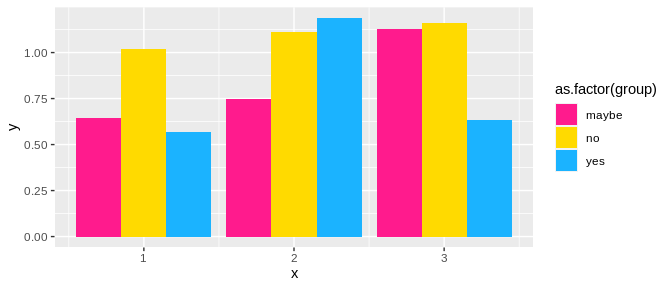
Use matching theme_lgbtq() to make colors stand out the most:
ggplot(data, aes(x = x, y = y, fill = as.factor(group))) +
geom_bar(stat = "identity", position = "dodge") +
scale_fill_manual(values = palette_lgbtq("pansexual")) +
theme_lgbtq("pansexual")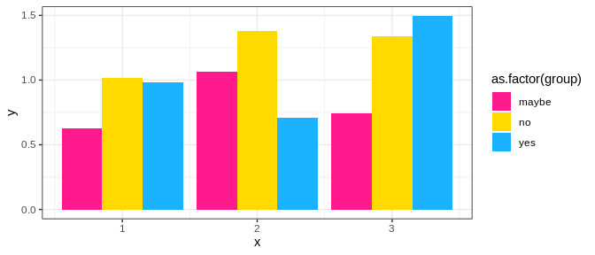
theme_lgbtq() passes additional parameters to ggplot2::theme(), so it’s fully customizable:
ggplot(data, aes(x = x, y = y, fill = as.factor(group))) +
geom_bar(stat = "identity", position = "dodge") +
scale_fill_manual(values = palette_lgbtq("pansexual")) +
theme_lgbtq("pansexual", legend.position = "left")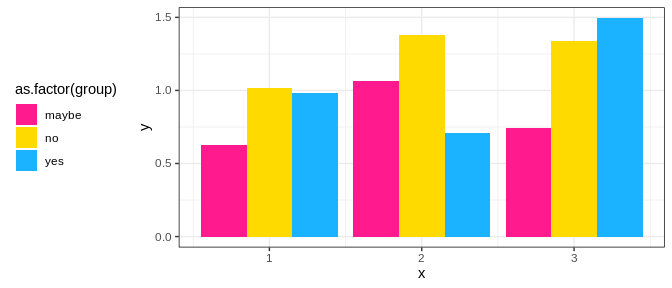
Gallery
Only a few most common palettes are included below. For the complete list, see palette gallery vignette.
palette_lgbtq("rainbow")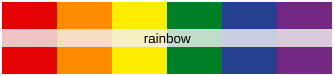
palette_lgbtq("philadelphia")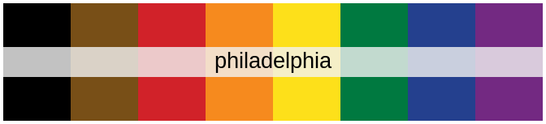
palette_lgbtq("progress")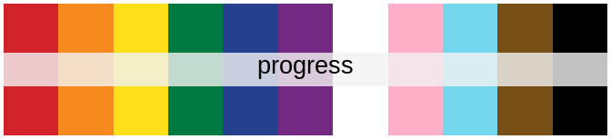
palette_lgbtq("lesbian")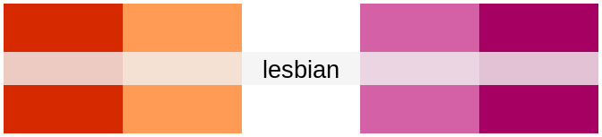
# In its original meaning of "gay men"
palette_lgbtq("gay")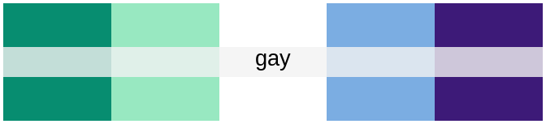
palette_lgbtq("bisexual")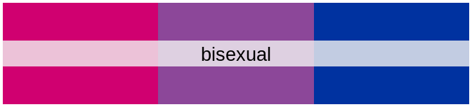
# Background added to avoid the "disappearance" of the white stripe
print(palette_lgbtq("transgender"), background = "gray92")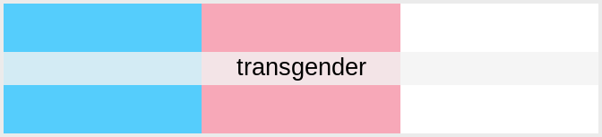
palette_lgbtq("asexual")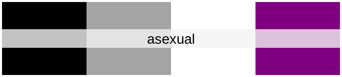
palette_lgbtq("nonbinary")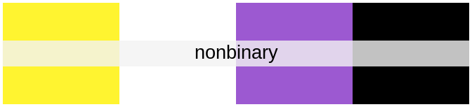
palette_lgbtq("intersex")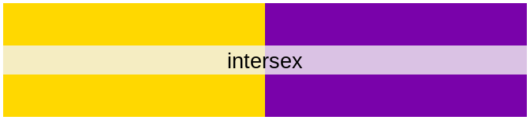